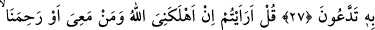
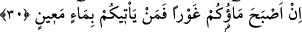
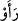
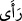

SİZE KİM BİR AKAR SU GETİREBİLİR?
27. Ama onu (azâbı) yakından gördükleri zaman, inkâr edenlerin yüzleri
kararacak ve (kendilerine): İşte sizin isteyip durduğunuz budur! denecektir.
28. De ki: Allah beni ve beraberimdekileri (sizin istediğiniz üzere) yok etse veya
(öyle olmayıp da) bizi esirgese, (söyleyin bakalım) inkârcıları yakıcı azaptan
kurtaracak kimdir?
29. De ki: (Sizi îmâna dâvet ettiğimiz) O (Allah) çok esirgeyicidir; biz O’na îman
etmiş ve sırf O’na güvenip dayanmışızdır. Siz kimin apaçık bir sapıklık içinde
olduğunu yakında öğreneceksiniz!
30. De ki: Suyunuz çekiliverse, söyleyin bakalım, size kim bir akar su getirebilir?
“Ama onu (azâbı) yakından gördükleri zaman, inkâr edenlerin yüzleri kararacak ve
(kendilerine):” Burada âyetin başındaki “fâ” harfi fasîha olup iki cümlenin mukadder
olduğunu ifâde etmektedir. Bu iki cümlenin başında şart edâtı bulunmaktadır. Bir başka
ifâde ile burada sanki şöyle denmiş olmaktadır: O vaad edilen şeyler kâfirlere gelir.
Onu gözleriyle ayan beyân görürler. İşte bu vaad edileni gördükleri zaman inkâr
edenlerin yüzleri kararacak. Vâki olmayan yâni henüz gerçekleşmeyen bir husus kesin
biçimde gerçekleşeceğinden dolayı sanki şu anda meydana gelmiş bir mesele
mesâbesine indirilmiştir. Âyetin metninde yer alan “zülfeten/yakından” kelimesi “ /reav/gördüler” fiilinin mef’ûlünden hâldir. Çünkü burada “ /reâ” fiili gözle görme
anlamı ifâde etmektedir. Nitekim ru’yetin kalp gözüyle değil de çıplak gözle görme
anlamına olduğuna az yukarıda işâret olunmuştu.
“ /Zülfeten” kelimesi ya muzaf takdir edilerek hâl yapılır; yâni yakınlık sâhibi
anlamına “ /zâ zülfetin” şeklinde anlaşılır. Ya da kelime masdar olarak alınıp ism-i
fâil mânâsında olur. Bu durumda kelimenin mânâsı “muzdelifen” şeklinde ve “yaklaşmış
olarak gördükleri zaman” anlamında olur. “Haşra yaklaşmak” haşir gününde kendileri
için hazırlanan cezâya, azâba ve her şeye yaklaşmak demektir.
İnkâr edenlerin yüzlerinin kararması ise yüzlerine bir ümidsizliğin çökmesi ile kara
leke ve horluğun gelmesi ile olacaktır. Burada özellikle “yüz”lerin zikredilmesinin